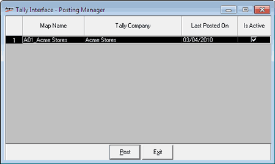

Shoper 9 can post the accounting and closing stock values to Tally 9. Posting of data to Tally 9 is usually carried out as part of scheduled activity, which can be defined during implementation. However, you can use this option to execute the export activity outside the schedule. Before exporting data to Tally 9, you need to configure the details to be posted to Tally.
Note: The transaction created only in Shoper 9 can be posted to Tally.ERP 9.
How to reach: Housekeeping > Data Exports Masters > Post Transactions to Tally
The Tally Interface - Posting Manager window is displayed.

All existing mapping information for the showroom is displayed in the grid.